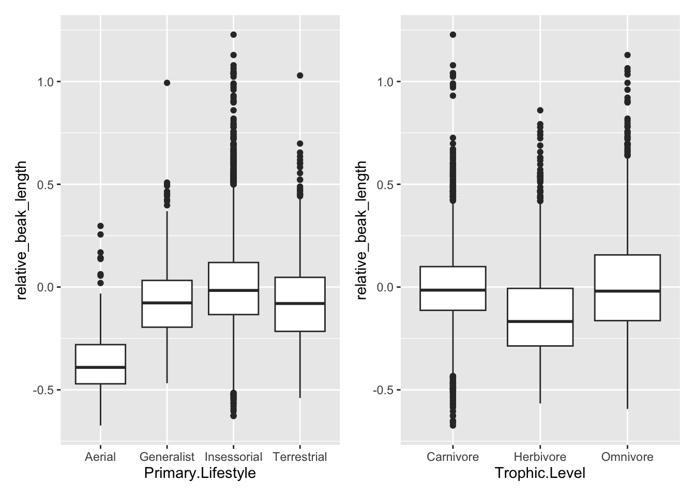
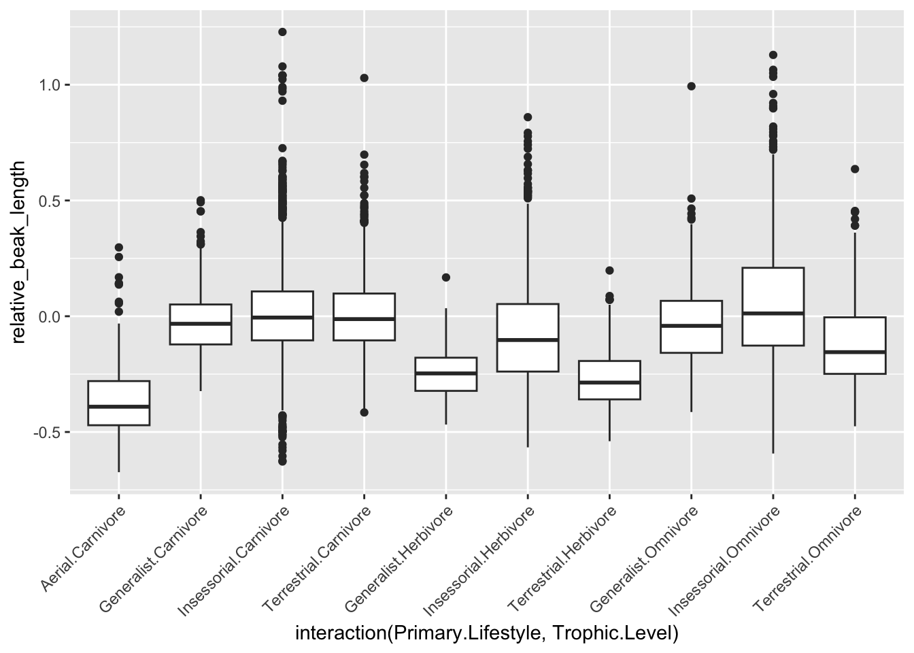
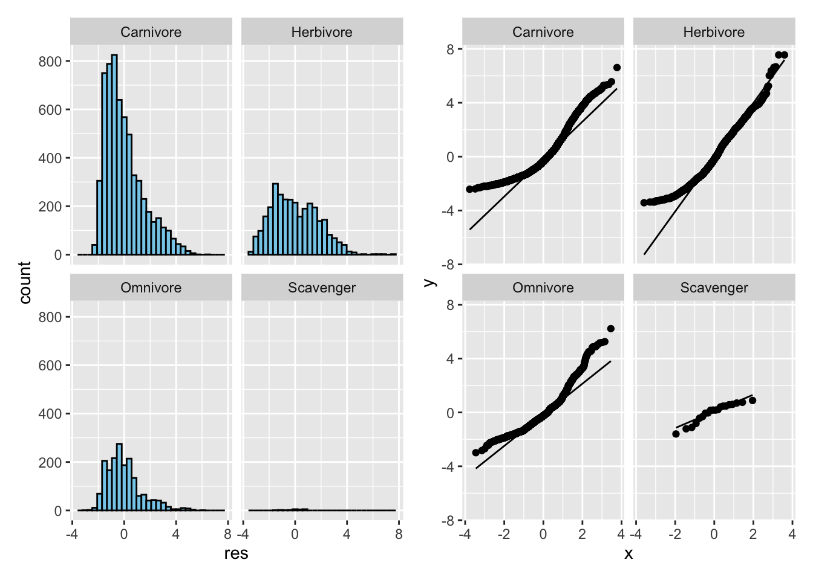
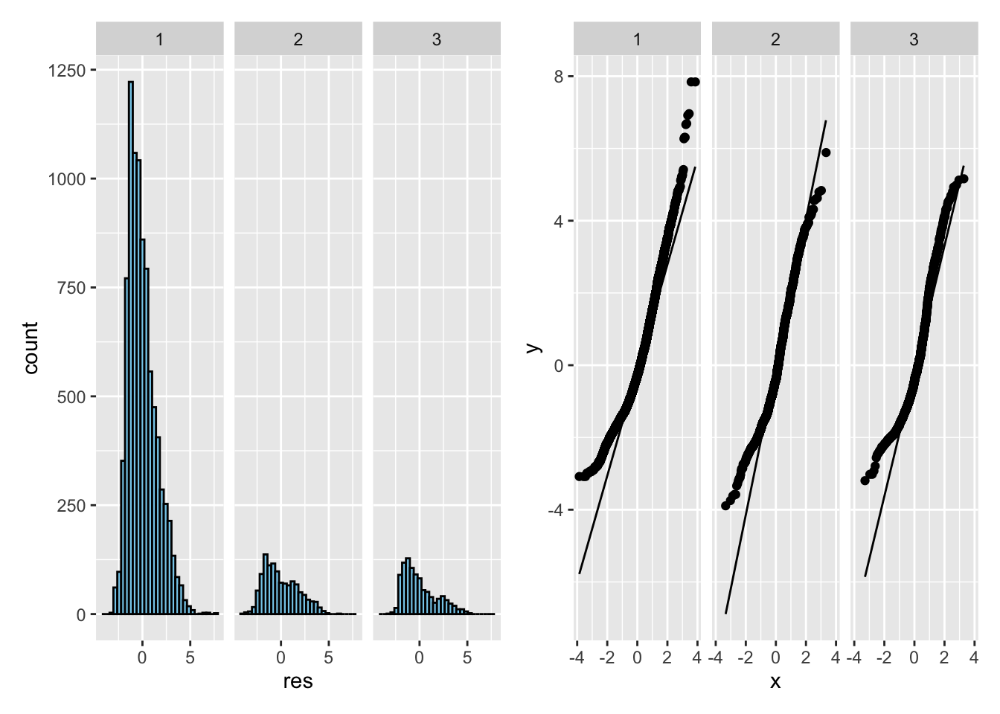
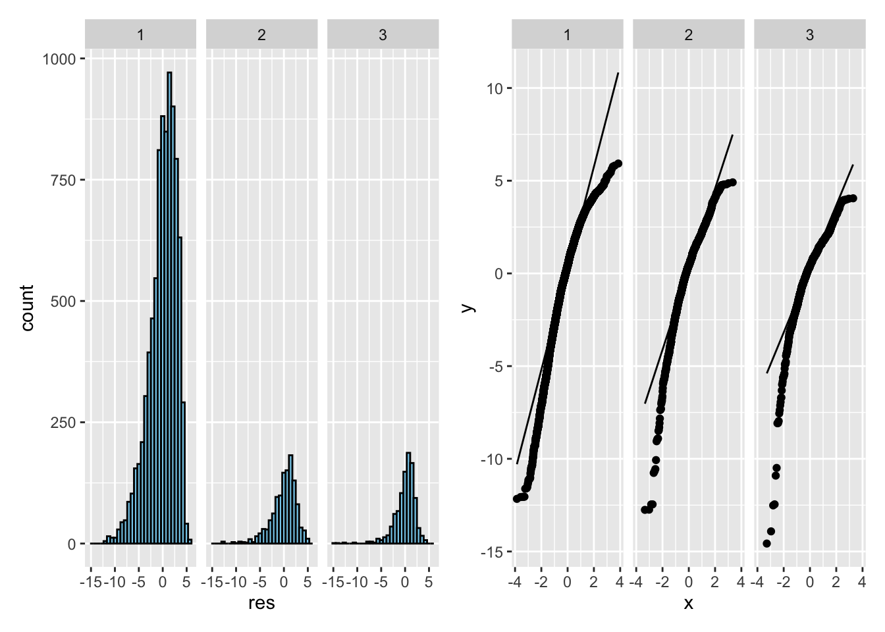
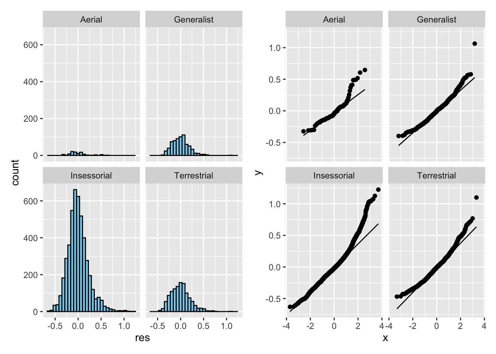
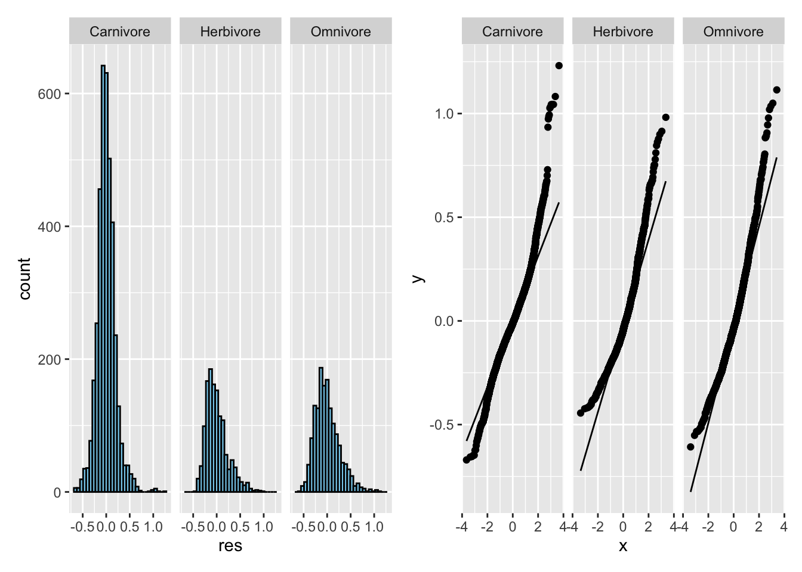

── Conflicts ────────────────────────────────────────── tidyverse_conflicts() ──
✖ dplyr::filter() masks stats::filter()
✖ dplyr::lag() masks stats::lag()
ℹ Use the conflicted package (<http://conflicted.r-lib.org/>) to force all conflicts to become errors
d <-read_csv("https://raw.githubusercontent.com/difiore/ada-datasets/refs/heads/main/AVONETdataset1.csv")
Rows: 11009 Columns: 37
── Column specification ────────────────────────────────────────────────────────
Delimiter: ","
chr (13): Species1, Family1, Order1, Avibase.ID1, Mass.Source, Mass.Refs.Oth...
dbl (24): Sequence, Total.individuals, Female, Male, Unknown, Complete.measu...
ℹ Use `spec()` to retrieve the full column specification for this data.
ℹ Specify the column types or set `show_col_types = FALSE` to quiet this message.
There are 7 character variables and 12 numeric variables.
Challenge 1
step 1
# boxplot of log(Mass) in relation to Trophic.Level p1 <-ggplot(data=d %>%drop_na(Trophic.Level),aes(x=Trophic.Level, y=log(Mass)))+geom_boxplot()+geom_jitter()# boxplot of log(Mass) in relation to Migrationd <- d %>%mutate(Migration =as.factor(Migration))p2 <-ggplot(data=d %>%drop_na(Migration),aes(x=Migration, y=log(Mass)))+geom_boxplot()+geom_jitter()p1+p2
Call:
lm(formula = log(Mass) ~ Trophic.Level, data = d)
Residuals:
Min 1Q Median 3Q Max
-3.4229 -1.1551 -0.3028 0.8982 7.5526
Coefficients:
Estimate Std. Error t value Pr(>|t|)
(Intercept) 3.80834 0.01967 193.632 < 2e-16 ***
Trophic.LevelHerbivore 0.25639 0.03406 7.528 5.54e-14 ***
Trophic.LevelOmnivore 0.01422 0.04116 0.345 0.73
Trophic.LevelScavenger 4.63189 0.34447 13.446 < 2e-16 ***
---
Signif. codes: 0 '***' 0.001 '**' 0.01 '*' 0.05 '.' 0.1 ' ' 1
Residual standard error: 1.538 on 11000 degrees of freedom
(5 observations deleted due to missingness)
Multiple R-squared: 0.02094, Adjusted R-squared: 0.02067
F-statistic: 78.42 on 3 and 11000 DF, p-value: < 2.2e-16
m2 <-lm(log(Mass) ~ Migration, data=d)summary(m2)
Call:
lm(formula = log(Mass) ~ Migration, data = d)
Residuals:
Min 1Q Median 3Q Max
-3.8924 -1.1769 -0.3088 0.9152 7.8427
Coefficients:
Estimate Std. Error t value Pr(>|t|)
(Intercept) 3.77457 0.01636 230.710 < 2e-16 ***
Migration2 0.75971 0.04731 16.059 < 2e-16 ***
Migration3 0.37647 0.05155 7.303 3.02e-13 ***
---
Signif. codes: 0 '***' 0.001 '**' 0.01 '*' 0.05 '.' 0.1 ' ' 1
Residual standard error: 1.535 on 10983 degrees of freedom
(23 observations deleted due to missingness)
Multiple R-squared: 0.02563, Adjusted R-squared: 0.02546
F-statistic: 144.5 on 2 and 10983 DF, p-value: < 2.2e-16
The F statistic large enough to reject the null hypothesis of an F value of zero for both models. log(Mass) is associated with Trophic.Level and Migration category.
The Migration level 2 and 3 are different than Migration level 1 (the reference level).
Tukey multiple comparisons of means
95% family-wise confidence level
factor levels have been ordered
Fit: aov(formula = log(Mass) ~ Migration, data = d)
$Migration
diff lwr upr p adj
3-1 0.3764693 0.2556282 0.4973105 0
2-1 0.7597067 0.6488157 0.8705977 0
2-3 0.3832374 0.2284536 0.5380211 0
The result shows that each category is significantly different from one another.
step 4
d <- d %>%mutate(logMass =log(Mass))permutated.F <- d %>%specify(logMass ~ Trophic.Level) %>%hypothesize(null ="independence") %>%generate(reps =1000, type ="permute") %>%calculate(stat ="F")
p_value <- permutated.F %>%get_p_value(obs_stat = original.F$statistic, direction ="greater")
Warning: Please be cautious in reporting a p-value of 0. This result is an approximation
based on the number of `reps` chosen in the `generate()` step.
ℹ See `get_p_value()` (`?infer::get_p_value()`) for more information.
p_value
# A tibble: 1 × 1
p_value
<dbl>
1 0
The p value is close to 0 which suggest the F statistic is large enough to reject the null hypothesis of an F value of zero.
Challenge 2
step 1
m4 <-lm(log(Beak.Length_Culmen) ~log(Mass), data=d)d <- d %>%mutate(relative_beak_length = m4$residuals)m5 <-lm(log(Tarsus.Length) ~log(Mass), data=d)d <- d %>%mutate(relative_tarsus_length = m5$residuals)
Call:
lm(formula = log(Range.Size) ~ Migration, data = d %>% drop_na(Migration))
Residuals:
Min 1Q Median 3Q Max
-14.5710 -1.4521 0.4357 1.9763 5.9271
Coefficients:
Estimate Std. Error t value Pr(>|t|)
(Intercept) 13.81850 0.08076 171.099 < 2e-16 ***
Migration1 -1.78469 0.08606 -20.737 < 2e-16 ***
Migration3 0.73233 0.12015 6.095 1.13e-09 ***
---
Signif. codes: 0 '***' 0.001 '**' 0.01 '*' 0.05 '.' 0.1 ' ' 1
Residual standard error: 2.785 on 10934 degrees of freedom
(49 observations deleted due to missingness)
Multiple R-squared: 0.0869, Adjusted R-squared: 0.08674
F-statistic: 520.3 on 2 and 10934 DF, p-value: < 2.2e-16
d <- d %>%mutate(Migration =relevel(as.factor(Migration), ref="1"))m8 <-lm(log(Range.Size) ~ Migration, data=d %>%drop_na(Migration))summary(m8)
Call:
lm(formula = log(Range.Size) ~ Migration, data = d %>% drop_na(Migration))
Residuals:
Min 1Q Median 3Q Max
-14.5710 -1.4521 0.4357 1.9763 5.9271
Coefficients:
Estimate Std. Error t value Pr(>|t|)
(Intercept) 12.03381 0.02974 404.62 <2e-16 ***
Migration2 1.78469 0.08606 20.74 <2e-16 ***
Migration3 2.51702 0.09380 26.83 <2e-16 ***
---
Signif. codes: 0 '***' 0.001 '**' 0.01 '*' 0.05 '.' 0.1 ' ' 1
Residual standard error: 2.785 on 10934 degrees of freedom
(49 observations deleted due to missingness)
Multiple R-squared: 0.0869, Adjusted R-squared: 0.08674
F-statistic: 520.3 on 2 and 10934 DF, p-value: < 2.2e-16
posthoc1 <-TukeyHSD(m6, which ="Migration", ordered =TRUE, conf.level =0.95)posthoc1
Tukey multiple comparisons of means
95% family-wise confidence level
factor levels have been ordered
Fit: aov(formula = log(Range.Size) ~ Migration, data = d %>% drop_na(Migration))
$Migration
diff lwr upr p adj
2-1 1.7846901 1.582952 1.986428 0
3-1 2.5170168 2.297150 2.736883 0
3-2 0.7323266 0.450689 1.013964 0
When reference level is Migration level 2, level 1 and 3 are both different than level 2. When reference level is Migration level 1, level 3 is different than level 1. Based on post-hoc test, all categories are significantly different from one another.
step 4
d_p <- d %>%filter(Order1 =="Passeriformes")# plots for each predictorp5 <-ggplot(d_p, aes(x = Primary.Lifestyle, y = relative_beak_length)) +geom_boxplot()p6 <-ggplot(d_p, aes(x = Trophic.Level, y = relative_beak_length)) +geom_boxplot()p5+p6

# plot for the interaction of predictorsp7 <-ggplot(d_p, aes(x =interaction(Primary.Lifestyle, Trophic.Level),y = relative_beak_length)) +geom_boxplot()+theme(axis.text.x =element_text(angle =45, hjust =1))p7

# linear models for each predictorm9 <-lm(relative_beak_length ~ Primary.Lifestyle, data=d_p)summary(m9)
Call:
lm(formula = relative_beak_length ~ Primary.Lifestyle, data = d_p)
Residuals:
Min 1Q Median 3Q Max
-0.6314 -0.1380 -0.0172 0.1118 1.2241
Coefficients:
Estimate Std. Error t value Pr(>|t|)
(Intercept) -0.34950 0.02158 -16.19 <2e-16 ***
Primary.LifestyleGeneralist 0.27926 0.02306 12.11 <2e-16 ***
Primary.LifestyleInsessorial 0.35342 0.02181 16.20 <2e-16 ***
Primary.LifestyleTerrestrial 0.27924 0.02249 12.42 <2e-16 ***
---
Signif. codes: 0 '***' 0.001 '**' 0.01 '*' 0.05 '.' 0.1 ' ' 1
Residual standard error: 0.2158 on 6610 degrees of freedom
Multiple R-squared: 0.05581, Adjusted R-squared: 0.05538
F-statistic: 130.2 on 3 and 6610 DF, p-value: < 2.2e-16
The plot shows that there are interactions between lifestyle and trophic levels.
step 8
for m1 <- lm(log(Mass) ~ Trophic.Level, data=d)
d_m1 <- d %>%drop_na(Trophic.Level) %>%mutate(res =residuals(m1))#calculate standard deviations within each groupsd_summary_m1 <- d_m1 %>%group_by(Trophic.Level) %>%summarise(sd_resid =sd(res), n =n()) %>%arrange(desc(sd_resid))sd_summary_m1
#calculate ratiocat("SD ratio (max / min): ", max(sd_summary_m1$sd_resid) /min(sd_summary_m1$sd_resid), "\n")
SD ratio (max / min): 2.485
#This suggests possible violation of the equal variance assumption, particularly influenced by the small sample size in the Scavenger group.#visualizationp8 <-ggplot(d_m1, aes(x = res)) +geom_histogram(bins =30, fill ="skyblue", color ="black") +facet_wrap(~ Trophic.Level)p9 <-ggplot(d_m1, aes(sample = res)) +stat_qq() +stat_qq_line() +facet_wrap(~ Trophic.Level)p8+p9

Histograms and QQ plots of residuals indicate that the Herbivore group shows approximately normal residuals, while Carnivore and Omnivore groups display right-skewness and curvature in QQ plots, suggesting deviations from normality.
for m2 <- lm(log(Mass) ~ Migration, data=d)
d_m2 <- d %>%drop_na(Migration) %>%mutate(res =residuals(m2))#calculate standard deviations within each groupsd_summary_m2 <- d_m2 %>%group_by(Migration) %>%summarise(sd_resid =sd(res), n =n()) %>%arrange(desc(sd_resid))sd_summary_m2
#calculate ratiocat("SD ratio (max / min): ", max(sd_summary_m2$sd_resid) /min(sd_summary_m2$sd_resid), "\n")
SD ratio (max / min): 1.20414
#This indicates that the assumption of equal variances is met.#visualizationp10 <-ggplot(d_m2, aes(x = res)) +geom_histogram(bins =30, fill ="skyblue", color ="black") +facet_wrap(~ Migration)p11 <-ggplot(d_m2, aes(sample = res)) +stat_qq() +stat_qq_line() +facet_wrap(~ Migration)p10+p11

Histograms and QQ plots suggest that residuals are not normally distributed within migration categories. All groups show right-skewed distributions and curvature in QQ plots, especially in the largest group (Migration = 1).
for m7 <- lm(log(Range.Size) ~ Migration, data=d)
d_m7 <- d %>%filter(!is.na(Range.Size)&!is.na(Migration))%>%mutate(res =residuals(m7))#calculate standard deviations within each groupsd_summary_m7 <- d_m7 %>%group_by(Migration) %>%summarise(sd_resid =sd(res), n =n()) %>%arrange(desc(sd_resid))sd_summary_m7
#calculate ratiocat("SD ratio (max / min): ", max(sd_summary_m7$sd_resid) /min(sd_summary_m7$sd_resid), "\n")
SD ratio (max / min): 1.332764
#This indicates that the assumption of equal variances is met.#visualizationp12 <-ggplot(d_m7, aes(x = res)) +geom_histogram(bins =30, fill ="skyblue", color ="black") +facet_wrap(~ Migration)p13 <-ggplot(d_m7, aes(sample = res)) +stat_qq() +stat_qq_line() +facet_wrap(~ Migration)p12+p13

Histograms and QQ plots show approximately normal distributions in all groups, with minor left-skew and slight deviation at the tails in QQ plots, particularly for Migration group 1. Overall, the normality assumption appears to be met
for m9 <- lm(relative_beak_length ~ Primary.Lifestyle, data=d_p)
d_m9 <- d_p %>%filter(!is.na(relative_beak_length)&!is.na(Primary.Lifestyle))%>%mutate(res =residuals(m9))#calculate standard deviations within each groupsd_summary_m9 <- d_m9 %>%group_by(Primary.Lifestyle) %>%summarise(sd_resid =sd(res), n =n()) %>%arrange(desc(sd_resid))sd_summary_m9
#calculate ratiocat("SD ratio (max / min): ", max(sd_summary_m9$sd_resid) /min(sd_summary_m9$sd_resid), "\n")
SD ratio (max / min): 1.243933
#This indicates that the assumption of equal variances is met.#visualizationp14 <-ggplot(d_m9, aes(x = res)) +geom_histogram(bins =30, fill ="skyblue", color ="black") +facet_wrap(~ Primary.Lifestyle)p15 <-ggplot(d_m9, aes(sample = res)) +stat_qq() +stat_qq_line() +facet_wrap(~ Primary.Lifestyle)p14+p15

Histograms and QQ plots show that residuals are approximately normally distributed in all groups, with mild curvature at the tails, especially in larger groups. The Aerial group’s small sample size limits interpretation. Overall, this model meets the assumptions of linear regression.
for m10 <- lm(relative_beak_length ~ Trophic.Level, data=d_p)
d_m10 <- d_p %>%filter(!is.na(relative_beak_length)&!is.na(Trophic.Level))%>%mutate(res =residuals(m10))#calculate standard deviations within each groupsd_summary_m10 <- d_m10 %>%group_by(Trophic.Level) %>%summarise(sd_resid =sd(res), n =n()) %>%arrange(desc(sd_resid))sd_summary_m10
#calculate ratiocat("SD ratio (max / min): ", max(sd_summary_m10$sd_resid) /min(sd_summary_m10$sd_resid), "\n")
SD ratio (max / min): 1.336194
#This indicates that the assumption of equal variances is met.#visualizationp16 <-ggplot(d_m10, aes(x = res)) +geom_histogram(bins =30, fill ="skyblue", color ="black") +facet_wrap(~ Trophic.Level)p17 <-ggplot(d_m10, aes(sample = res)) +stat_qq() +stat_qq_line() +facet_wrap(~ Trophic.Level)p16+p17

Histograms and QQ plots show approximately normal distributions across all groups, with some mild curvature at the tails. Overall, this model meets the assumptions of linear regression.